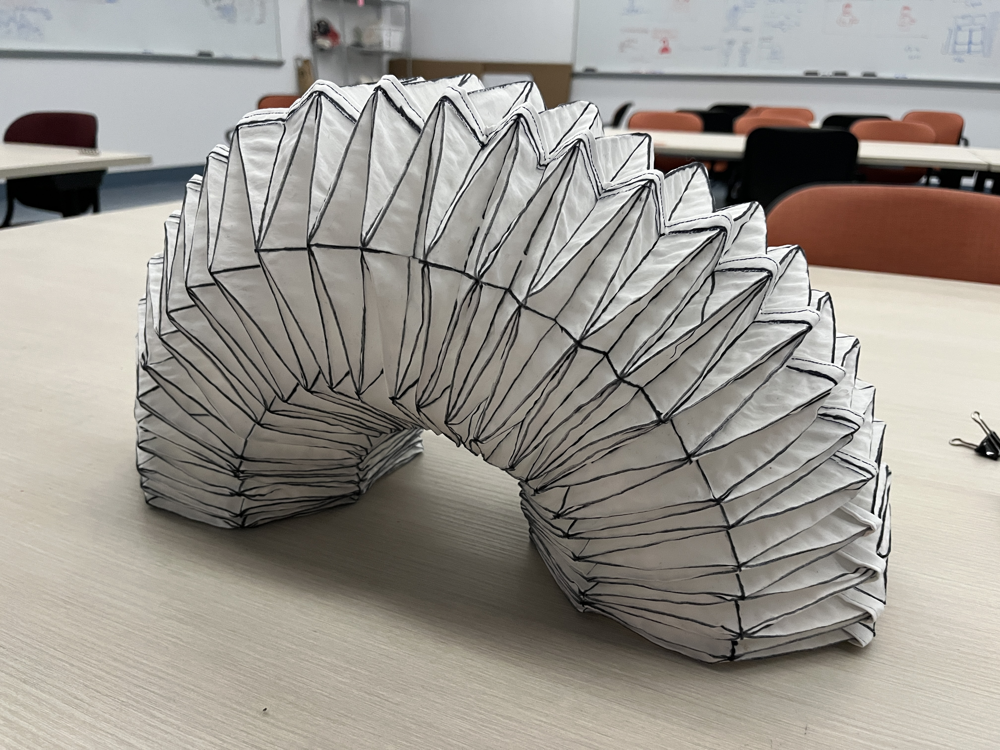
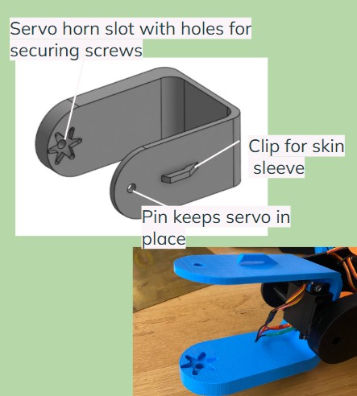
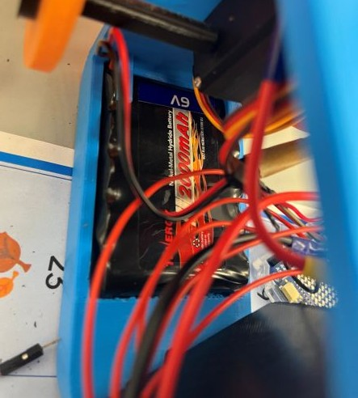
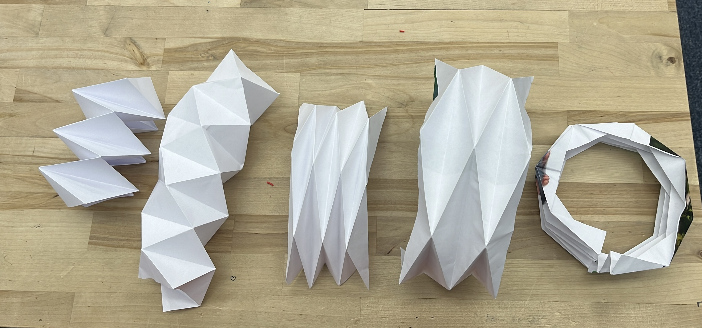
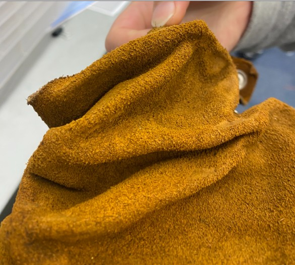
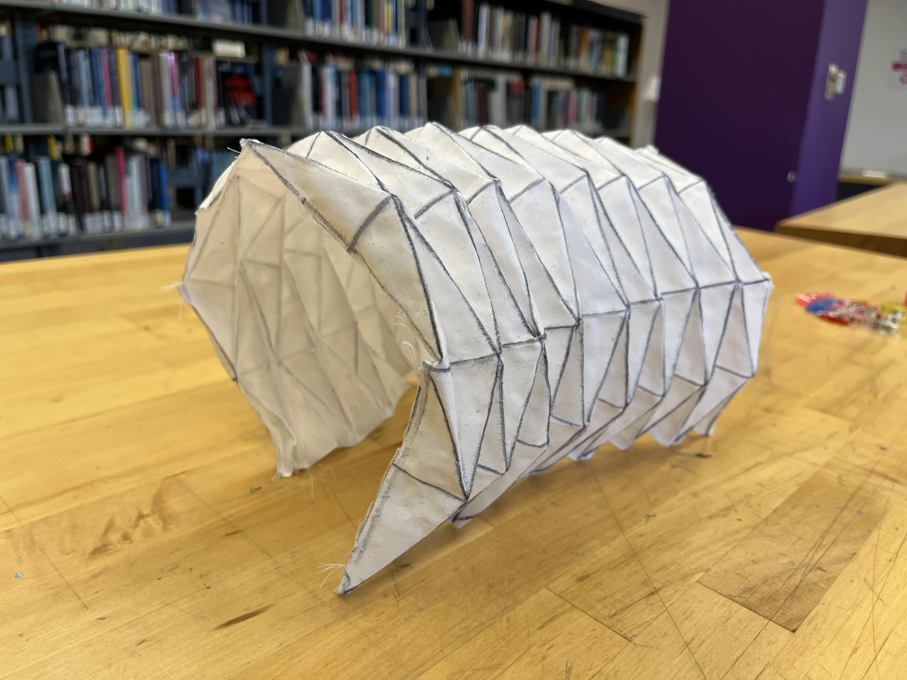
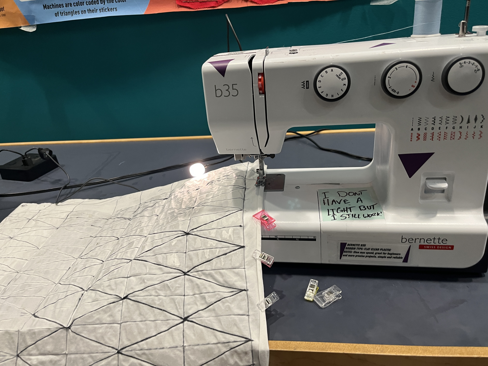
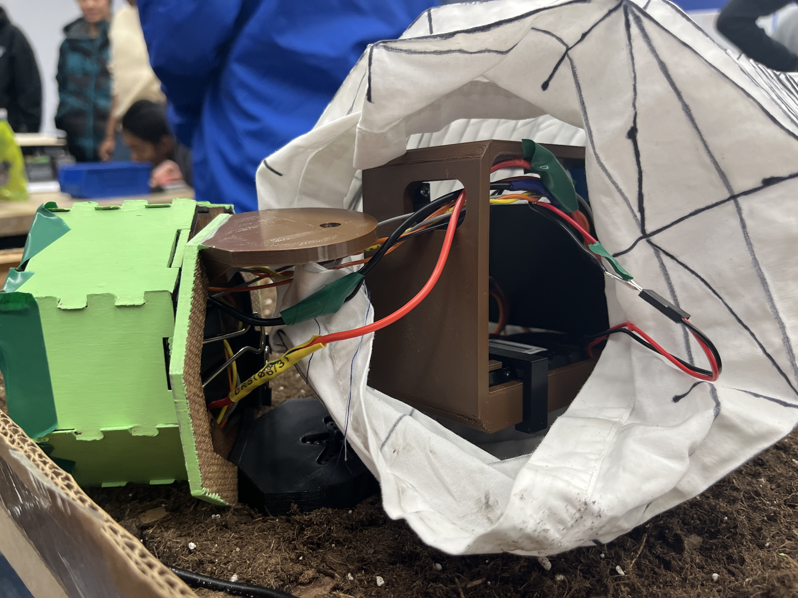
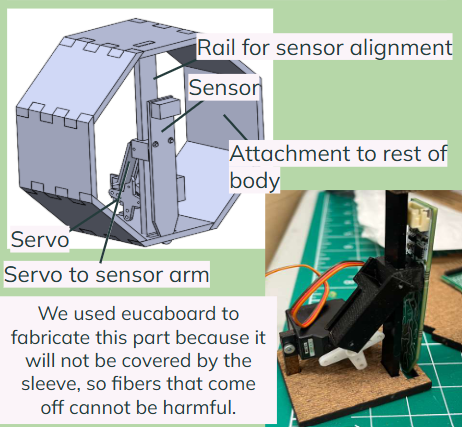

Links
When we first started this project, we looked at multiple other people's designs to determine what type of joint might work best for our snake. Some designs used servos that all moved in the same direction, and had wheels on the bottom. This would allow for flat slithering movement, but we wanted our snake to be able to move up and down as well as side to side. The wheels also posed a problem for traversing in terrain such as dirt, which was a key requirement for our design. We also saw designs that used pistons to contract and expand the sides of the snake which would give it a slithering movement. However, this was complicated and would be hard to code.
Ultimately we decided to go with a design that would give the servos two degrees of motion, alternating between vertical and horizontal movement. This would allow for movement in different terrains and would be easier to code. We decided to 3d print u-links that each had a motor mount for the servo and would connect to the next link. This would allow us to add more joints as needed.
Our first CAD of the u-link is a simple block cad, trying to make sure dimensions were right and everything would fit. The next one that we printed was just big enough for the servos to fit. However in our second sprint, we decide to extend the length of the u-link so that it could fit all the components - especially our battery - on to the snake because one of our goals was having the snake move wirelessly. Extending the snake also made it look much larger, which would help the snake move farther.

Because we wanted the snake to operate wirelessly and we knew that the wires would also need a lot of space to move around, we didn't want any of our components to get tangled with the wires. Thus, we made mounts for the battery and had pins to keep the servos in place.


Skin
From the beginning we knew we would need a flexible, yet water and dirt resistent outer shell for our snake to protect the internal components from the elements. At first, we were going to use burlap because of its natural fibers and durability, but after buying burlap, we realized there were too many holes and loose fibers. It also seemed constricting to just have a fabric enclose our snake like a sock.
Origami Iterations
We were able to take inspiration from origami to try and create a round shape that could also stretch and compress. The image to the right shows our iteration of different fold patterns, starting from a flat pattern that could stretch and compress into a cylindrical shape.

Feasibility
Once we found a fold pattern that would fit our snake, we wanted to test if the skin could stretch and compress enough to allow for the snake's movements. We also wanted to test attachment methods, so we put a tab on the paper skin and connected to two links and watched the vertical and horizontal movement. As seen in the videos, the skin was able to stretch to the snake's maximum rotation and compress back into the original pattern.
Making the Skin
Obviously, paper would not be a durable material for the snake's skin, so we tried two alternatives. The first was leather, which when you soak in water and then let dry, becomes stiff and will hold a pattern. However, leather was thick and hard to get into the right shape. Once we had it in the right shape, it wouldn't sustain the weight of the snake, it would just collapse on itself. The second option we considered was tyvec. However the skin interfaces with the environment and we were concerned with tyvec shedding.

The other option we tried was taking a cotton bedsheet, drawing the fold pattern on to it, and then applying glue onto each individual triangle, leaving the fold lines unglued so it wouldn't become stiff. While time consuming, this gave us the stiff panels we needed while still being flexible and water resistant.

Step 1: draw lines, paint glue

Step 2: let dry and clip into place

Step 3: admire
Final Version
For the final version of the skin, we took a super long bedsheet, and we glued it. Then we sewed it together to keep it together. At first, we wanted to flip it inside out to hide the seam, but we realized the glue was too brittle and was causing the fabric to tear so instead we sewed on a seam.


Head
One of our core goals was sustainability. Part of this meant any surface, such as the head, interfacing with the ground should not shed plastic. We decided to cut euca board, which has the added benefit of being sustainably sourced and scraps could be easily recycled. We designed an octagon that could be laser cut, would fit onto the u-links, fit the sensor and be able to clamp the skin into place.
We also wanted the sensor to be able to go in and out of the head, similar to a tongue in order to take the soil measurements. In order to do this, we designed a small servo and rail system that would move the sensor up and down. We also designed it to be able to hold a camera, so that the user could see what the snake was seeing and be able to control the snake remotely.

